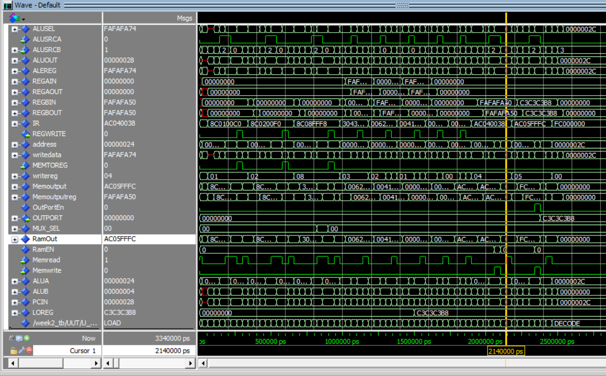
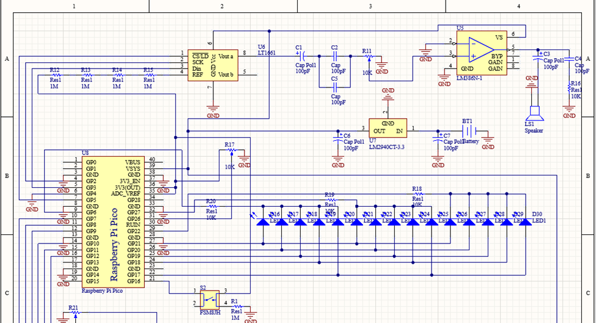

A portfolio of projects highlighting my experience in RTL design, FPGA systems, embedded engineering, machine learning, and automation.
RTL / FPGA / Semiconductor Projects

Intel RTL Sub-IP Design

MIPS-like Microprocessor Design

SoC Design for Autonomous Car
Pong Game on FPGA
Applied Engineering Projects
Pontiac Fiero Engine Restoration

Roulette Game on Microcontroller
DAC Waveform Generator & USART Piano
Machine Learning Projects

Applied ML: Dempster-Shafer Fusion

Flower Species Classification
Software & Automation Projects